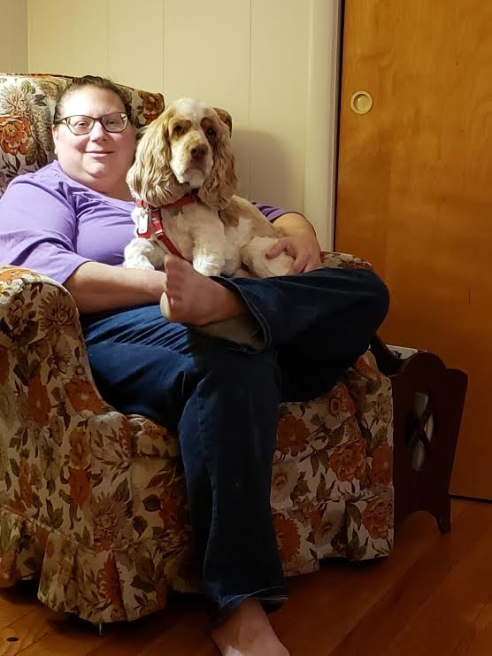

Susan Gumlock was born in Bethlehem, PA at St Luke's hospital. She graduated from Moravian Academy in 1996. She is an animal lover but likes dogs the best. Susan has a cocker spaniel named Mosey. He is a very lovable dog, but is also extremely naughty. Some of her interests are watching sports, looking up real estate listings, and watching Youtube. Susan wanted to take the YWEB web development course because needs to pivot to a more stable and more profitable career. Susan Gumlock was born in Bethlehem, PA at St Luke's hospital. She graduated from Moravian Academy in 1996. She is an animal lover. She has a cocker spaniel named Mosey.He is a very lovable, but extremely naughty dog. Some of her interests are watching sports, looking up real estate listings, and watching Youtube. Susan wanted to take the YWEB web development course because needs to pivot to a more stable and more profitable career.Susan Gumlock was born in Bethlehem, PA at St Luke's hospital. She graduated from Moravian Academy in 1996. She is an animal lover. She has a cocker spaniel named Mosey.He is a very lovable, but extremely naughty dog. Some of her interests are watching sports, looking up real estate listings, and watching Youtube. Susan wanted to take the YWEB web development course because needs to pivot to a more stable and more profitable career.Susan Gumlock was born in Bethlehem, PA at St Luke's hospital. She graduated from Moravian Academy in 1996. She is an animal lover. She has a cocker spaniel named Mosey.He is a very lovable, but extremely naughty dog. Some of her interests are watching sports, looking up real estate listings, and watching Youtube. Susan wanted to take the YWEB web development course because needs to pivot to a more stable and more profitable career.Susan Gumlock was born in Bethlehem, PA at St Luke's hospital. She graduated from Moravian Academy in 1996. She is an animal lover. She has a cocker spaniel named Mosey.He is a very lovable, but extremely naughty dog. Some of her interests are watching sports, looking up real estate listings, and watching Youtube. Susan wanted to take the YWEB web development course because needs to pivot to a more stable and more profitable career.
Susan loves to eat. She has lots of favorites but her three top foods are: Macaroni and cheese, Chocolate Chip cookies, and Apple crumb pie. Her favorite drink is Peach Snapple tea. Susan also hates many foods as well. She doesn't care for soup, lentils, legumes in general, quinoa, bulgar, hippie-dippie healthy stuff, yoghurt, cauliflower. Susan doesn't undersatnd why cauliflower rice and pizza are a thing. This should not exist. Susan also doesn't care for salmon, but will eat it to be polite. Susan loves to eat. She has lots of favorites but her three top foods are: Macaroni and cheese, Chocolate Chip cookies, and Apple crumb pie. Her favorite drink is Peach Snapple tea. Susan also hates many foods as well. She doesn't care for soup, lentils, legumes in general, quinoa, bulgar, hippie-dippie healthy stuff, yoghurt, cauliflower. Susan doesn't undersatnd why cauliflower rica and pizza are a thing. This should not exist. Susan also doesn't care for salmon, but will eat it to be polite.Susan loves to eat. She has lots of favorites but her three top foods are: Macaroni and cheese, Chocolate Chip cookies, and Apple crumb pie. Her favorite drink is Peach Snapple tea. Susan also hates many foods as well. She doesn't care for soup, lentils, legumes in general, quinoa, bulgar, hippie-dippie healthy stuff, yoghurt, cauliflower. Susan doesn't undersatnd why cauliflower rica and pizza are a thing. This should not exist. Susan also doesn't care for salmon, but will eat it to be polite.Susan loves to eat. She has lots of favorites but her three top foods are: Macaroni and cheese, Chocolate Chip cookies, and Apple crumb pie. Her favorite drink is Peach Snapple tea. Susan also hates many foods as well. She doesn't care for soup, lentils, legumes in general, quinoa, bulgar, hippie-dippie healthy stuff, yoghurt, cauliflower. Susan doesn't undersatnd why cauliflower rica and pizza are a thing. This should not exist. Susan also doesn't care for salmon, but will eat it to be polite.Susan loves to eat. She has lots of favorites but her three top foods are: Macaroni and cheese, Chocolate Chip cookies, and Apple crumb pie. Her favorite drink is Peach Snapple tea. Susan also hates many foods as well. She doesn't care for soup, lentils, legumes in general, quinoa, bulgar, hippie-dippie healthy stuff, yoghurt, cauliflower. Susan doesn't undersatnd why cauliflower rica and pizza are a thing. This should not exist. Susan also doesn't care for salmon, but will eat it to be polite.
Susan is not a movie lover. She thinks the movie theatre is pricy, and more likely,you would probably find her watching sports instead of watching a movie on Netflix. However, Susan's favorite movies are Pretty Woman, Last Holiday, and The Parent Trap.Susan is not a movie lover. She thinks the movie theatre is pricy, and more likely,you would probably find her watching sports instead of watching a movie on Netflix. However, Susan's favorite movies are Pretty Woman, Last Holiday, and The Parent Trap.Susan is not a movie lover. She thinks the movie theatre is pricy, and more likely,you would probably find her watching sports instead of watching a movie on Netflix. However, Susan's favorite movies are Pretty Woman, Last Holiday, and The Parent Trap.Susan is not a movie lover. She thinks the movie theatre is pricy, and more likely,you would probably find her watching sports instead of watching a movie on Netflix. However, Susan's favorite movies are Pretty Woman, Last Holiday, and The Parent Trap.
Three Places on Susan's bucket list are Hawaii, Denmark, and Prince Edward Island and Nova Scotia.